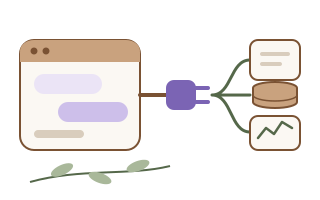

KI-Arbeitsabläufe mit Claude einrichten
Ich richte Claude so ein, dass Ihr Team wiederkehrende Aufgaben schneller erledigt, und verbinde es bei Bedarf mit Ihren eigenen Daten.

Erkennen Sie sich wieder?
- Ihr Team schreibt immer wieder ähnliche Dokumente.
- Einzelne nutzen KI, aber jeder anders und ohne gemeinsame Regeln.
- Wichtige Daten liegen in Dateien oder Datenbanken, an die die KI nicht herankommt.
- Sie möchten Ihr Team in KI-Grundlagen schulen.
Ein Beispiel
Die Ausgangslage
Das QM-Team eines kleinen Herstellers erstellt regelmäßig ähnliche Dokumente, etwa Prüfanweisungen oder Zusammenfassungen. Jede Person fängt dabei neu an.
Was ich tue
Ich richte ein gemeinsames Claude-Projekt mit Ihren Vorlagen und Regeln ein, lege wiederkehrende Abläufe als Skills fest und binde bei Bedarf über einen MCP-Server Ihre eigenen Daten an. Eine kurze Einführung zeigt dem Team Möglichkeiten und Grenzen.
Das Ergebnis
Das Team arbeitet mit gemeinsamen Vorlagen, Ergebnisse sind einheitlicher, und alle wissen, was die KI darf und was geprüft werden muss.
Meine Rolle
Ich habe acht Kurse der Anthropic Academy abgeschlossen, darunter Claude Code in Action, Introduction to Model Context Protocol, MCP: Advanced Topics und AI Fluency for Small Businesses. Mein Projekt biosignal-gdt habe ich mit Claude Code entwickelt.
Das übernehme ich
- Einrichtung und Dokumentation
- MCP-Anbindung eigener Daten
- Einführung für das Team
Das bleibt bei Ihnen
- Entscheidung, welche Daten die KI sehen darf
- Fachliche Prüfung aller KI-Ergebnisse
- Interne Regeln und Datenschutz
So gehe ich vor
- Gespräch: Welche Aufgaben, welche Daten, welche Regeln gelten in Ihrem Haus?
- Auswahl von ein bis zwei Abläufen für den Start.
- Einrichtung: Projekt, Vorlagen, Skills, bei Bedarf MCP-Anbindung.
- Kurze Einführung für das Team, inklusive Grenzen und Prüfpflichten.
- Nach einigen Wochen: Rückblick und Anpassung.
Stand
Ein MCP-Server für die Messdaten-Pipeline ist in Arbeit. Keine Verarbeitung von Patientendaten.
Klingt das nach Ihrer Situation? Schreiben Sie mir kurz, worum es geht. Für kleine Projekte bin ich ab 2027 verfügbar.
E-Mail schreiben